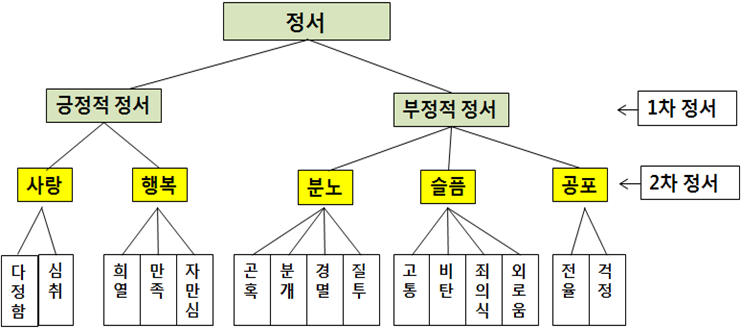
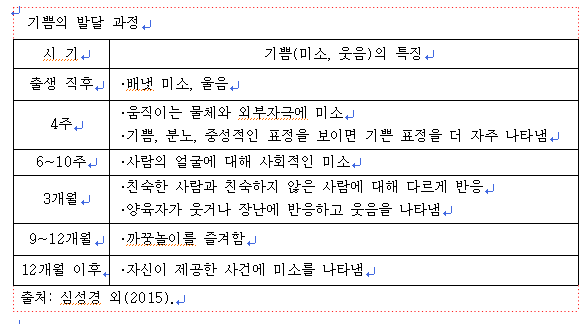

정서표현은 가장 기본적인 일차 정서(primary emotions)와 일차적 반응 이후에 나타나는 이차 정서(secondary emotion)로 구분한다.

1. 일차 정서
일차 정서(primary emotions)는 기본 정서이다. 세계 문화권의 정서의 수와 종류에는 다소 차이가 있지만 모든 영아에게 기쁨， 분노， 슬픔, 공포, 놀람 등은 보편적으로 나타난다.
1) 기쁨과 행복
기쁨은 기분이 좋다고 느끼는 정서로 미소나 웃음 등으로 표현되며, 건강한 영아에게서 자주 볼 수 있다. 신생아는 출생 직후 배냇미소라고 하여 외부 세계와 전혀 관계없이 선천적·반사적으로 미소를 짓는다. 4주경부터 움직이는 물체나 외부 자극에 대해 미소를 보이고, 6~10주는 사회적 미소(social smile)를 보이는데 연령이 증가함에 따라 익숙하거나 좋아하는 사람에 대해서만 나타낸다. 신체적으로 안락함을 느낄 때 나타내는 표현은 큰소리로 웃고, 뛰거나 박수를 치는 등으로 표현된다. 부모나 주변에서 자신을 안아주고, 귀여워하고, 쓰다듬어 주는 신체적 접촉 및 선호하는 말을 하면 웃으면서 자신의 애정도 표현한다.

2) 분노
출생 초기 영아는 배고픔이나 고통, 자극 등 불쾌감을 느낄 때 분노를 표현한다. 성장함에 따라 자신이 가지고 있는 것을 빼앗겼을 때, 원하는 것을 할 수 없을 때 나타난다. 초기에는 울음으로만 나타내지만 4개월 경부터는 화난 표정과 목소리로 표현한다. 분노는 2세경에 최고조에 달하며 사랑과 수용으로 분노를 달래주지 않으면 공격성으로 발전하기도 한다(심성경, 2013). 격렬한 분노는 직접적인 방해물에 화를 내다가 공격적인 행동으로 분노를 표시한다. 2세경에 울고, 소리 지르고, 발을 구르고, 바닥에 누워서 몸을 구르며, 뛰는 등 최고조에 달한다. 영아가 육체적, 공격적일 때는 언어나 사회적으로 수용되는 방식으로 표현하도록 유도하는 것이 바람직하다.
3) 불안과 공포
공포는 위협적인 사람이나 사물 또는 상황을 회피하려는 방어적 정서로 불안과 연결되어 있다. 영아의 공포 대상은 개인의 특성과 연령에 따라 변화된다. 생후 6개월경이 되면 인지발달로 인해 친숙하지 않은 대상에 대해서도 경계심을 갖게 된다. 불안은 애착이 형성된 양육자와의 분리 등이 공포를 유발하는 주요 원인이 되기도 한다. 출생 후 1년까지는 큰소리, 낯선 사람이나 장소에 민감하게 반응하기 때문에 느낀다. 2세경이 되면 불안 대상이 확대되어 어두운 곳, 동물에 대해서도 느낀다. 영아는 공포를 일으킨 사람, 사건, 사물 등을 직접 경험하거나 부모 및 주변의 사람들이 무서워하기, 소리 지르기, 울기 등을 모방하면서 학습된다.
2. 이차 정서
이차 정서는 복합정서라고도 한다. 일차 정서보다 늦게 나타나며, 자기 자신에 대한 인지능력이 필요하다(Lzard, 1994). 이차 정서의 종류 중 영아기에 나타날 수 있는 자부심, 애정, 만족, 수치심, 죄책감, 부러움 질투 등이 있다.
1) 자부심·수치심, 죄책감
자부심은 자신이 하고자 하는 일을 성공적으로 수행했을 때 나타난다. 반면, 실수했거나 하지 말아야 할 것을 했을 때 수치심과 죄책감을 느끼게 된다. 생후 18~36개월 사이에 주로 놀이를 경험하는 과정에서 도덕적 위반, 부정적인 결과가 반복될 때 나타난다.
2) 애정
영아는 사물이나 사람에 대한 애정을 표현하기 위하여 양육자의 목에 팔을 두르고 매달리기, 얼굴에 비비기나 만지기, 껴안거나 품에 안기기 등을 표현한다. 이러한 애정은 개나 고양이나 또래보다 가까이 접근하는 양육자에게 먼저 나타난다.
3) 질투
질투는 애정을 상실했거나 상실할까봐 상대를 두려워하는 정서다. 질투는 분노, 애정, 공포의 혼합 정서로 자신에게 향하던 관심이 다른 사람에게로 옮겨질 때 나타난다. 18~24개월 사이에 자신이 받고 있는 관심 정도가 강할수록 강하게 표현된다. 특히 동생의 출생으로 부모의 애정이 동생에게 더 많은 주의를 기울인다고 여길 때 더욱 심해진다. 이 시기에 동생에게 공격적인 행동을 보이거나 오줌싸기, 손가락 빨기, 응석부리기 등 퇴행행동으로 질투심을 표현하기도 한다.
출처: 영유아발달(2018). 김영애, 선애순, 정효정. 양서원
2022.02.06 - [분류 전체보기] - 분리 불안과 불안 심리의 차이 - 낯가림, 애착, 두려움과 공포
분리 불안과 불안 심리의 차이 - 낯가림, 애착, 두려움과 공포
분리불안과 불안의 의미 분리불안(separation anxiety)이란 발달과정과 일상생활의 적응 정도에 따라 아이들에게 흔히 나타나는 증세이다. 최초 어머니상(primary mother-figure)의 상실감에 따른 공포증은
think-sis.tistory.com